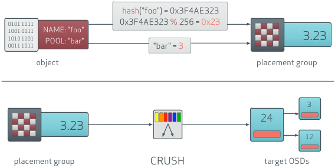

Video Training Deck OpenStack
2016-11-2
Introduction to

What is Ceph?
SDS solution
Object, Block, file storage
Popular with OpenStack (Nova, Glance, Cinder, (RadosGW))
Hardware agnostic - be careful though
based on Reliable, Autonomous, Distributed Object Store(RADOS)
High-level

Ceph (RADOS) key features?
Reliable - multiple replicas
Autonomous - self healing
Distributed - Data/replicas spread across nodes/racks/DCs
Scalable - @CERN: PB, 10.000vms
Client access data directly (cluster map)
Copy-on-write (Glance image to Nova/Cinder)
Ceph nodes
Ceph OSD Nodes (store data)
Ceph monitor (store cluster map) (at least 3)
(optional) Ceph Metadata Server (for CephFS)
OSD nodes typically deployed with "SSD Journals" to speed up writes (HDDs are slow)
1 OSD node, multiple OSD Daemons

OpenStack + Ceph?
used for Cinder (volumes)
used for Nova (ephemeral)
used for Glance (images)
used as Swift replacement (object via Rados Gateway)
Ceph and data replication
Client wants to write data
Retrieves cluster map from monitor
Determine OSD:

Ceph and data replication
Writes to primary OSD
OSD replicates to other OSDs

Takeways
Distributed Object Storage system
Cloud scale, but simple
Works great with OpenStack
But can also be used standalone